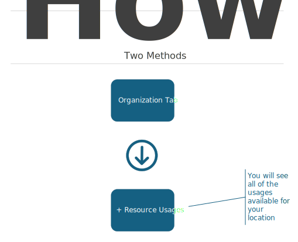
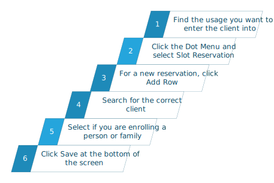
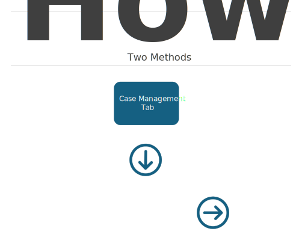
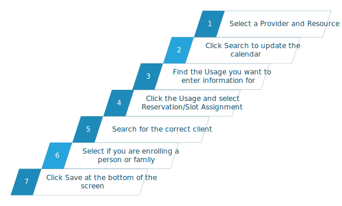

How to Reserve a Seat (slot) in a Class or Event
Keep in mind that CaseWorthy does not use the term Seat. It instead uses the term Slots to refer to openings. When you enroll you client into a class or event, you need to reserve a slot for them. This will put them on the roll list and will check them into the class or event.
The instructions for recording an absence are located here.
When you need to reserver a slot for a client, you can choose one of two methods. We will go over each method.
The Organization Tab
The first method occurs on the Organization tab.

After you click the Resource Usages, you should see all of the usages that are available for your location. If you do not see the correct usages or if you want to see usages for another site, contact the Data Team.
Look over the list and choose the correct usage that you wish to enroll the client into.

Click the Dot Menu to the left of the correct usage and select Slot Reservation. This will bring up a new window. On this window you can add a new reservation as well as search for all current reservations.
Click the Add Row button at the top of the screen. Search for your client and then decide if you are enrolling that client as a family or as an individual. If you are enrolling the entire family, enter in the number of children and adults who will be attending. Lastly, click Save at the bottom of the screen.
Class Calendar
The other option for reserving a slot is to do it through the class calendar located on the Case Management tab, Calendars.

Once you click the Calendars menu item, you are taken to a new dashboard containing multiple selections. You want to choose the Class calendar. This will bring up a search screen where you must select a Provider (site) and a Resource and then click Search.

Find the usage you want to reserve a slot for, click it and select Reservation/Slot Assignment. Enter the information as you did above and click Save at the bottom of the screen.